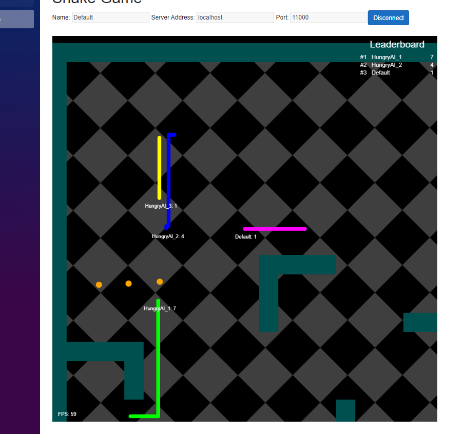

Projects
Spreadsheet
10/8/2024Project overview
This project is a spreadsheet application built using C# and Blazor, with a focus on user interaction within a browser. Here are some of the applications functionality:
- Users can select cells by single-clicking or double-clicking, which brings the focus to the main input widget
- Arrow keys allow moving the selection up, down, left, or right in the grid
- Can create formulas by using the "=" sign before text
- Updates all related cells upon a given cell changing
- Reference values of other cells by writing their name within a Formula
- Save the Spreadsheet
- Load a spreadsheet into the application using a JSON string in ".sprd" file
- Clear the spreadsheet
- Adjust the number of rows and columns in the spreadsheet
This project also uses a Blazor component library called MudBlazor, which acts as a simple and convenient way to give the document a cohesive style and ease of use.
Big Concepts:
- Blazor
- Test Driven Development
- Unit Testing
- MVC
- Seperation of Conecerns
- GSP
- Self Doucmenting code

Snake Game
11/10/2024Project overview
This project is a Snake Client application built using C# and Blazor. We used Blazor.Extensions.Canvas and Blazor.Extensions.Canvas.Canvas2D to draw the snakes, and the world. Here are some of the applications functionality:
- Multiple Clients can connect through the given server
- Arrow Keys and W,A,S,D allow snake movement
- Touch a powerup and get one score point
- Listens to the server and receives all world information, and updates world model
- Sends movement command information to the server
- Keeps track of all connected clients
- Leaderboard that displays up to the top 3 snakes with the highest score
- Displays FPS. If the client fails to connect shows error message
- Map size responds to whatever maps size the server gives.
- A fade animation is played whenever a snake dies, which adds some life to the game.
- Uses JSON to communicate with the server.
We use JSON to communicate with the server. The Client sends actions to the server. The server sends obejcts to the client and then we deserialze each one and update tghe world. This process uses multi-threading and uses mulitiple threads in order to reduce latency.
Big Concepts:
- Networking
- Drawing
- MVC
- Seperation of Conecerns
- Multi-Threading


WebServer
12/5/2024Project overview
This is a WebServer that displays the SnakeClient Database information. I wrote this with C#, SQL and HTML. This project connects to the snake Client database and displays Game stat information.
- Updated the Snake Client to Save Game data and snake high score data to Microsoft database.
- Can access saved data through new WebServer app.
- Can accept browser clients and send HTML string through HTTP for the browser to render.
Big Concepts:
- Networking
- User Secrets
- HTTP
- Databases
- Relational Databases
- SQL
- Multi-Threading
- ORM

Protfolio Website
12/29/2024Project overview
Personal website outline projects, skills and classes I have taken. Neatly, puts much of CS concepts I have learned into one place. I introducted myself to much more HTML and CSS with this project.
Big Concepts:
- HTML
- CSS
- Media Query

To look at any github repository referenced in this project page or if you'd like a demo send me an email.